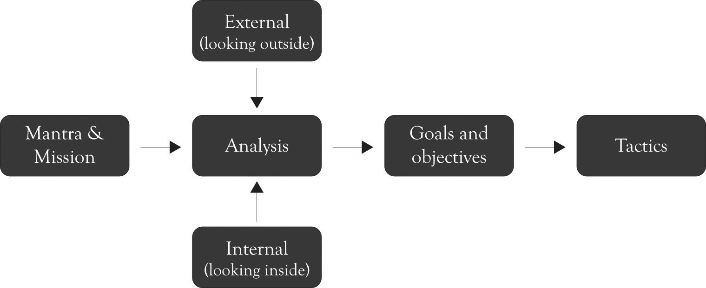
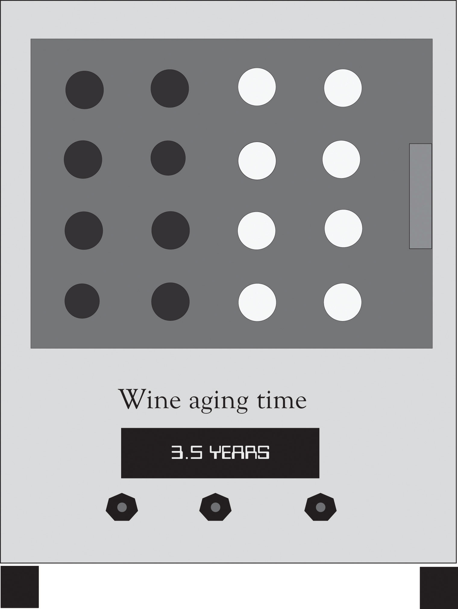

As noted in the last chapter, the planning process is never-ending because of the ongoing pressure in the marketplace. There is no single plan that can deal with the complexity of monopolistic competition. The first mantra of the entrepreneur is: differentiate through innovation or perish, and this is accomplished by focusing on Midas versions of products using extravagant engineering. The second mantra of the entrepreneur is: strive to reduce costs, and this is accomplished by focusing on Hermes versions of products using frugal engineering and design. The dynamic tension between delivering Midas and Hermes versions will also lead to mainstream Atlas products. A continuous process for developing business plans is necessary for competing and surviving under monopolistic competition. As discussed in the last chapter, the strategic planning process can be modeled using the diagram in Figure 9.1 "Strategic Planning Process". The mantra and mission are constantly evaluated and revisited throughout the life of the firm.
Figure 9.1 Strategic Planning Process
The Ten–Ten planning processOnce you have gathered some background data related to the industry and organization, you should be able to complete an Organizational and Industry Analysis template and a Business Plan Overview template in about 20 minutes. contains two templates: an Organizational and Industry Analysis template and the Business Plan Overview template that identifies the mantra, mission, money, goals, objectives, and tactics in a very brief format. (These templates can be downloaded from http://glsanders.wordpress.com/) The idea behind the Ten–Ten approach is that once you have gathered some background data related to the industry and the organization, you should be able to complete the two templates in about 20 minutes.See Horan (2007). This is an alternative approach to Horan’s approach developing a brief plan. One deficiency of the Horan approach is that it does not integrate the key ideas found in the major planning approaches. The deficiency in all of the other planning approaches discussed in Chapter 8 "Strategic Planning and Ten–Ten Planning" is they take too much time and, yet, they are not comprehensive enough because they do not include and build on other approaches. The Ten–Ten approach attempts to reconcile speed with comprehensiveness. This will of course be a very rough first-cut, but it will be the foundation for developing more refined plans. The Ten–Ten process is meant to be quick and to the point, but it can be expanded to 10 hours, 10 days, or in some instances 10 weeks, but rarely more than that. These templates along with the FAD (features, attributes, and design) template can be used to develop the executive summary. This in turn can be used to develop a full-blown business plan, which is the foundation for building the business. Figure 9.2 "The Business Development Process" illustrates the entire Ten–Ten process from conceptualizing the business idea through building the business.
Figure 9.2 The Business Development Process

The first template is the Organizational and Industry Analysis templateIncorporates the quick SWOT analysis using concepts from supply chain analysis, Porter’s value chain analysis and five-force model, the resource-based approach, core competencies analysis, and the Blue Ocean Strategy Canvas to conduct a brief industry analysis without bogging down in details. and it incorporates the quick SWOT analysis using concepts from supply chain analysis, Porter’s value chain analysis and five-force model,Porter (1998). the resource-based approach,Barney (1991). core competencies analysis,Prahalad and Hamel (1990). and the Blue Ocean Strategy Canvas.Kim and Mauborgne (2005). The idea is to conduct a brief industry analysis without getting bogged down in the details. This template is contained in Note 9.3 "Organizational and Industry Analysis Template (do this first)". The FAD template is a good source of information related to what products or services are going to be produced and sold. The point of the first planning template is to help you understand the current or proposed organization and the target industry. Questions 1 through 5 assist in detailing the basic question related to what business you are in and what the industry looks like. Question 6 is a simplified SWOT diagram. It is intentionally small so that that it is difficult to enter too many items. Long laundry lists are a recurring critique of SWOT analysis. One area where the simplified SWOT analysis differs from the traditional SWOT approach is that the focus is not on just internal issues, but on any areas where an organization has strengths and weaknesses. For example, the research and development (R&D) and product development areas are typically considered internal functions, but the supply and value chains along with the brand image are interconnected functions that span the internal and external organizational environment.
Give a brief description of your business model including what products or service you are producing or will produce.
___________________________________________________________
Describe your target customers and the size of the market.
___________________________________________________________
List and describe your current competitors.
___________________________________________________________
List and describe your potential competitors.
___________________________________________________________
Who will you purchase or acquire materials, components, resources, or other inputs from?
___________________________________________________________
SWOT (consider human resources, R&D, marketing, procurement, manufacturing, distribution, engineering, IT, finance, accounting, and legal)
Use the FAD template to add key attributes to the Strategy Canvas (you can continue the table if you need more attributes)
| Meaning of product or service | BOF POD POP EXT DIS | BOF POD POP EXT DIS | BOF POD POP EXT DIS | BOF POD POP EXT DIS | BOF POD POP EXT DIS | BOF POD POP EXT DIS | ||
|---|---|---|---|---|---|---|---|---|
| Attribute name | Price | Quality | ||||||
| Very high | ||||||||
| High | ||||||||
| Average | ||||||||
| Low | ||||||||
| Very low | ||||||||
| Not applicable | ||||||||
| BOF, Blue Ocean features and exciters; POD, points of difference and differentiators; POP, points of parity and must-haves; EXT, extinct and vestigial features; DIS, dissatisfiers | ||||||||
Another important feature of the Organizational and Industry Analysis template is the presence of question 7 and the development of a strategy canvas, the Blue Ocean strategy, for identifying the current product features and how they compare with one or more competitors or with a typical product or service found in the industry marketplace. The goal is to assist in illustrating what product features are being used to differentiate the competitors and to identify other areas where you might want to reduce or add features or even increase or decrease performance.
The second template is the Business Plan Overview templateA template that uses the Organizational and Industry Analysis information and FAD template to identify the organizational mantra, mission, money or value proposition, goals and objectives, and tactics used to develop the full-blown business plan. (see Note 9.5 "Business Plan Overview Template (do this second)"). This template uses the Organizational and Industry Analysis information and FAD template to identify the organizational mantra, the mission, the money or value proposition, goals and objectives, and tactics. It is essentially a scaled-down business plan that can be used to develop the full-blown business plan that will be discussed in a later chapter.
The mantra: Guy Kawasaki prefers using a mantra in lieu of a mission statement.Kawasaki (2008). He is very critical of mission statements that are crafted by a large committee of 60 at an offsite retreat. We do not see the mantra as a replacement for the mission statement. We see the mantra as an often-repeated phrase that provides the basis for the existence of the company. It is a slogan, a watchword, a byword, and a motto that breathes life into the firm’s existence. The meaning of a product as identified in the FAD template is a good place to look for the foundations of a mantra. Examples include the following:
The mission statement: The mission statement presents a brief overall view of the business. It describes what the company does and why it exists. It should focus on meeting customer needs. It should address at an abstract level what products or services are produced. It can also include a statement reflecting whether the company will focus on product differentiation and niche markets, focus on being price-competitive, or focus on both. The FAD template is also a good source of information for the mission statement. Examples of a mission statement include the following:
The money: The purpose of this section is to provide an overview for the value proposition. That is how your organization will make money using the two generic business model strategies. The organization can differentiate, be the low-cost producer, or both. As noted earlier, most organizations attempt to differentiate and be the low-cost producer at the same time. Because they are often conflicting strategies, many organizations are slightly better at one or the other. The best performers balance both strategies. One important consideration is the generation of additional sales by offering complementary products and services. For example, a printer company can sell toner, warranties, and maintenance contracts. A phone manufacturer might become a mobile application developer and also sell accessories for the phone. Firms should also discuss the potential size of the market when it is relevant and whether there is potential for a Blue Ocean market. Examples of money statements include the following:
The goals and objectives: There is a lot of confusion related to goals and objectives. Goals are thought of as being more abstract and broader than objectives. This is a rather overstated and specious claim that creates more harm than good. This section of the business plan template encourages you to list both goals and objectives. The important point is to identify the goals and objectives that will help support the mantra, the mission, and the value proposition over the next 3 months to a year. Examples include the following:
The tactics: The tactics are the activities the organization will use over the next 3 months to a year to reach a company’s goals and objectives. In the context of the military, the tactics are the techniques used to deploy troops, hardware, aircraft, and ships for combat. In business, this includes the activities related to marshaling human resources, manufacturing resources, acquiring equipment, and related supply chain activities to attain the goals and objectives. The tactics can include timetables and schedules related to the goals and objectives. Examples of tactics include the following:
What is your mantra considering differentiation through innovation or perish or cost reduction (3–10 words on why your company should exist)?
___________________________________________________________
___________________________________________________________
___________________________________________________________
What is the overall mission of the business (1–3 sentences on what your company does or will do and your target customers)?
___________________________________________________________
___________________________________________________________
___________________________________________________________
How will you make money in terms of product differentiation, being the low-cost producer, and what complementary products and services will be offered in order to generate recurring revenues?
___________________________________________________________
___________________________________________________________
___________________________________________________________
What are your goals and objectives over the next 3 months to year (2–6 phrases on precise performance intentions)?
___________________________________________________________
___________________________________________________________
___________________________________________________________
What tactics will you use over the next 3 months to a year to reach your objectives and mission (2–8 phrases)?
___________________________________________________________
___________________________________________________________
___________________________________________________________
One of the most common reframes we hear from entrepreneurs is that:
They just don’t understand our business model.
They just don’t understand what we are doing.
Who are they? They can be friends, family, investors, and even the business founders. In reality, they sometimes do not understand because the business concept is faulty, but sometimes they do not understand because you have not communicated the essence of the vision to the relevant parties. The Ten–Ten planning templates can alleviate some of the confusion; furthermore, at some point, the Ten–Ten templates will have to be converted into a well-crafted executive summary that tells an interesting story. This will help further refine the business model, and it will also serve as a platform for communicating with the many theys that are encountered.
The executive summaryTo communicate a business model to readers in a one- or two-paged story or perhaps even three. should tell a story in one or two pages or perhaps even three pages. The best way to prepare the business plan is to use Business Plan Overview template information as a starting point and use the Industry and Organizational and the FAD templates for additional input into the development of the executive summary. Here is a general format for the executive summary:
Paragraph 1: Introduce the idea (four to six sentences).
Paragraph 2: Describe your business model and what products or services will be produced (four to eight sentences).
Paragraph 3: Discuss your strengths (three to six sentences).
Paragraph 4: Discuss the opportunities and how the goals and objectives relate to achieving the opportunities.
The executive summary can be up to three pages and have additional paragraphs, but you should still aim for brevity, crispness, and clarity. Remember, the goal of the executive summary is to communicate your business model to the readers by telling a story. One of the best ways to communicate ideas is to keep the readers interested and avoid long meandering discussions. Here are a few ways for increasing attention and interest.
The first thing is to avoid using bullet points in your executive summary. Bullet points create the impression that you have just cut and pasted the presentation into the executive summary. In addition, readers tend to skim bullet points and sometimes even ignore them. You should also vary the length of your sentences. For example, have two short sentences, one long sentence, and one short sentence followed by a long sentence and then a short sentence. The idea is to mix up the sentence structure and create interest. Always try to begin and start your executive summary with a catchy phrase related to the mantra. Finally, editing is important, and having someone else edit your plan is essential. Even if you do not use the edited version, you will obtain insight into where the executive plan is unclear and needs work.See Section 9.5 "Conclusion" for an example of an actual business where the templates have been filled in. One example of an executive summary is exhibited in the Appendix at the end of this chapter.
Chapter 7 "Conceptualizing Products/Services Using FAD" introduced the concept of a device that could be used to reduce the time that it takes to age wine. The FAD template was presented in Chapter 7 "Conceptualizing Products/Services Using FAD" for a storage and refrigerator device that could be used to age wine. This example is extended in the Appendix of this chapter. The Appendix contains a completed template for the Organizational and Industry Analysis and a completed template for the business plan overview. The Appendix also contains an executive summary for the wine aging cooler and the picture of the proposed product. The product was subsequently named the AddVintner Star.
In this chapter, we have illustrated a model for quickly crafting a business plan. The key points are the following:
Strategic planningThe process that determines the steps required to reach an objective, making the best use of available resources. is often criticized as taking too long, being too complex, and even being counterproductive. The Ten–Ten approach alleviates many of these criticisms by its conciseness and the way it focuses on learning-by-doing. It is still hard work. However, the author has actually had groups of people complete a Ten–Ten plan in one night. This includes conceptualizing a new business model up through the completion of the business templates. The feedback was generally positive from the experience, although the participants were exhausted.
The business planThe primary goal is to foster communication with business founders, partners, confidants, and funding sources. serves many purposes. But the primary goal is to foster communication with the business founders, partners, confidants, and funding sources. The Ten–Ten business planPresents a succinct overview of the what, how, when, and why of the business. presents a succinct overview of the what, how, when, and why of the business. It provides a concise overview of what the business is about and how money can be made. In many ways, the Ten–Ten documents are a prototype of the business model. This is in essence a scaled-down business model that describes how the business will function and serve as a platform for the business founders to communicate with each other and identify strengths and weaknesses of the emerging firm. In Chapter 12 "Developing a Business Plan", we will present the infrastructure for a full-blown business plan that can be used as a blueprint for operating the business the first year.
Give a brief description of your business model including what products or service you are producing or will produce.
We will develop high-tech devices that will significantly reduce the wine aging process. Most wines can benefit from aging. The typical Merlot needs 15 years to age and Pinot Noirs and Burgundies sometimes need 5 years to age. Shiraz-based wines sometimes require more than 20 years.
Describe your customers.
We will target wine connoisseurs, the wine aficionado, upscale restaurants and clubs, wine enthusiasts, and dabblers in sophistication. The wine connoisseur is one who understands the details, technique, and principles of wine as an art and is competent to act as a critical judge. The aficionado includes individuals who like, know about, appreciate and fervently pursue fine wines. The enthusiast and dabblers includes individuals who are interested in wine and enhancing prestige at a reduced price.
List and describe your current competitors.
List and describe your potential competitors.
Any business interested in wine aging technology. Companies currently producing wine refrigerators are also a threat.
Who will you purchase or acquire materials, components, resources, or other inputs from?
We will secure local manufacturers to develop the device and will hire local people to assemble the device.
SWOT (consider human resources, R&D, marketing, procurement, manufacturing, distribution, engineering, IT, finance, accounting, and legal)
What are your strengths (products, R&D, supply chain, brand, pricing, core competencies, resources, infrastructure, scalability, and interfaces)?
What are your weaknesses (products, R&D, supply chain, brand, pricing, core competencies, resources, infrastructure, scalability, and interfaces)?
What are the opportunities (growth, market share, product lines, Blue Ocean, complementary products, lock-in, brand, and first-mover advantage)?
What are the threats (substitutes, emerging technologies, new entrants, economic climate, government regulations, and social/culture issues)?
We also plan on developing a series of complementary products and services. For example, we could engage in wine consulting to producers. We could also introduce a line of wine accessories for consumers.
| Meaning | BOF POD POP EXT DIS | BOF POD POP EXT DIS | ||
|---|---|---|---|---|
| Attribute name | Price | Sophistication | Wine aging and refrigeration | Design |
| Very high | Us | Us | Us | |
| High | Us | Us | ||
| Average | Us | |||
| Low | Competition | |||
| Very low | Competition | Competition | Competition |
Business Plan Overview Template for AddVintner (confidential draft)
What is your mantra considering differentiation through innovation or perish or cost reduction (3–10 words on why your company should exist and company name)?
AddVintner: Creating fine wine before its time.
What is the overall mission of the business (1–3 sentences on what your company does or will do)?
We will develop high-tech refrigeration devices that will significantly reduce the time to age wines for a broad range of customers.
How will you make money in terms of product differentiation, being the low-cost producer, or both?
We plan on offering at least two products. One is targeted at the wine connoisseurs, aficionado, and expensive restaurants/clubs. The other product will be targeted toward wine enthusiasts and dabblers. The high-end products will be priced in the $1,500–$2,500 range. The low-end product will start at $400.
What are your goals and objectives over the next 3 months to year (2–6 phrases on precise performance intentions)?
What tactics will you use over the next 3 months to a year to reach your objectives and mission (2–8 phrases)?
It is said that music is the wine of silence. Aged wine is for those seeking silence and comfort in the chaos of everyday life. It is our mission to bring aged wine to the discriminating concern and to give everyone the opportunity to drink aged wine at a reasonable price. A good Merlot can take up to 15 years to age, a Pinot Noir or a Burgundy can take up to 5 years to age, and Shiraz-based wines may require 20 years. We sell the most advanced solutions for improving the aged quality of most wines without having to pay high prices or wait many years for the wine to be ready for the palate.
Our product (see prototype below of the AddVintner Star) can attract variety wine drinkers including wine connoisseurs, the wine aficionado, and expensive restaurants/clubs and wine enthusiasts and dabblers. Our product will help to reduce the time that a consumer has to wait for fine wine, it will also increase the quality of low-priced wines and it will increase the status of the owner of the product. We are strong believers in design-driven innovation and will spend several months experimenting with new ideas and concepts for creating new customer meanings for wine aging. R&D will be the key driver for developing products that are unique, contemporary, and relevant to the wine community. The competition will simply not be able to keep pace with our research-based design-driven products.
We are an idea-driven company and have assimilated a creative team of researchers and entrepreneurs to deliver products to compliment and reflect contemporary tastes. Our marketing and production plans are in place and we have a strong grasp of the critical elements in the supply chain. We are developing an organization that will not just listen to consumers but will also be proactive in developing products that will anticipate and drive demand.
Per capita wine consumption in the USA exceeds 9 liters per year.http://www.wineinstitute.org/files/PerCapitaWineConsumptionCountries.pdf Wine drinking by the Gen Xers and the Millennial’s exceeds the consumption of beer and spirits.http://www.winemarketcouncil.com/research_slideview.asp?position=9 We have an opportunity to tap into that huge market and develop products that are relevant to the life style of Gen Xers and the Millennial’s. We believe that we can generate nearly $7 million in revenue the first year. It is our goal to enter the market by January with two new products for producing fine wine before its time.
Figure 9.3 The AddVintner Star
